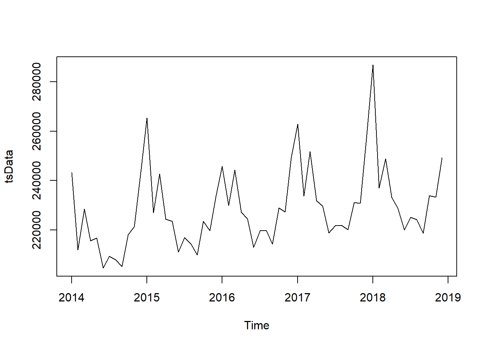
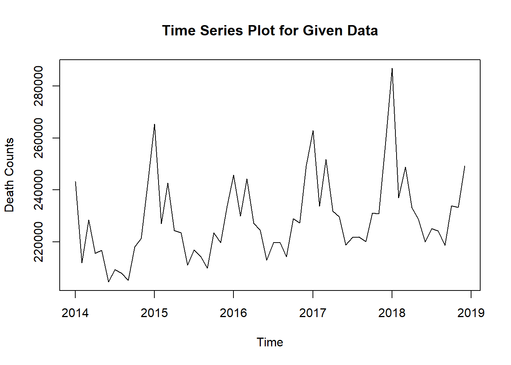

Chapter 5 Results
5.1 Time Series Analysis

Intuitively, death counts per month can be plotted and modeled by time series since data are collected on a monthly basis.
As the time series model is the foundation of our project, we would use it to predict death counts if there were pandemic (what would the data look like in a normal year). The predictions give us the baseline to compare with. Therefore, we want the predictions to be accurate and our model to be statistically reasonable. Therefore, we would analyze these using some graphs.

Firstly, we want to check if the assumptions of stationarity and seasonality for time series hold.
The decomposition of the time series plot shows trend, seasonal effects and white noise (randomness). As evident from the decomposition, the data exhibit strong seasonality with almost constant seasonal effects on a period of 12 and the trend is generally increasing with a few exceptions at 2015.6 and 2018.6.
The trend agrees what we have discovered in the introduction: death counts/rate is increasing in the past decade. Logically, the constant seasonal effect also makes sense, suggesting that more people die in winter perhaps because of winter flu and temperature.
Time series plot seems like a good approach and from here we develop some intuition that when comparing death counts, we we should take into account that there are more deaths in winter than in summer.
##
## ARIMA(2,0,2)(1,1,1)[12] with drift : Inf
## ARIMA(0,0,0)(0,1,0)[12] with drift : 992.9256
## ARIMA(1,0,0)(1,1,0)[12] with drift : 975.9687
## ARIMA(0,0,1)(0,1,1)[12] with drift : Inf
## ARIMA(0,0,0)(0,1,0)[12] : 1006.234
## ARIMA(1,0,0)(0,1,0)[12] with drift : 978.972
## ARIMA(1,0,0)(1,1,1)[12] with drift : Inf
## ARIMA(1,0,0)(0,1,1)[12] with drift : Inf
## ARIMA(0,0,0)(1,1,0)[12] with drift : 986.8855
## ARIMA(2,0,0)(1,1,0)[12] with drift : 977.8282
## ARIMA(1,0,1)(1,1,0)[12] with drift : Inf
## ARIMA(0,0,1)(1,1,0)[12] with drift : 976.5776
## ARIMA(2,0,1)(1,1,0)[12] with drift : 980.3347
## ARIMA(1,0,0)(1,1,0)[12] : 979.3249
##
## Best model: ARIMA(1,0,0)(1,1,0)[12] with drift## Series: tsData
## ARIMA(1,0,0)(1,1,0)[12] with drift
##
## Coefficients:
## ar1 sar1 drift
## 0.5195 -0.3903 361.1227
## s.e. 0.1325 0.1546 106.1293
##
## sigma^2 estimated as 33457901: log likelihood=-483.52
## AIC=975.04 AICc=975.97 BIC=982.52The automatically generated model is ARIMA(1,0,0)(1,1,0)[12]. The ACF and PACF plots agree with that model and therefore we will be using this simple model to predict what would death counts look like if there were no pandemic

Visually, the predicted data and the actual data look consistent. The predictions capture model trend and seasonality.
5.2 comparison